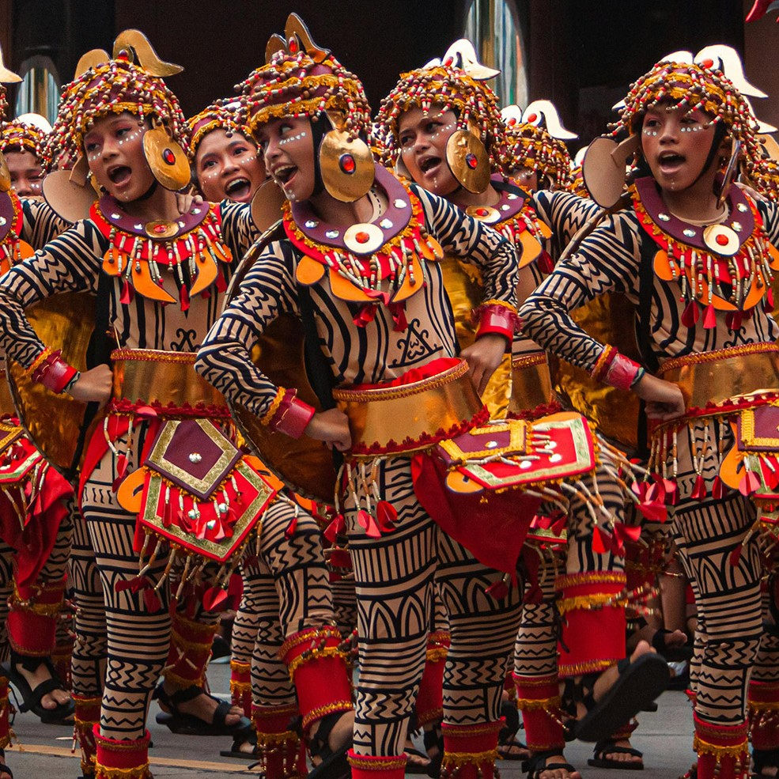
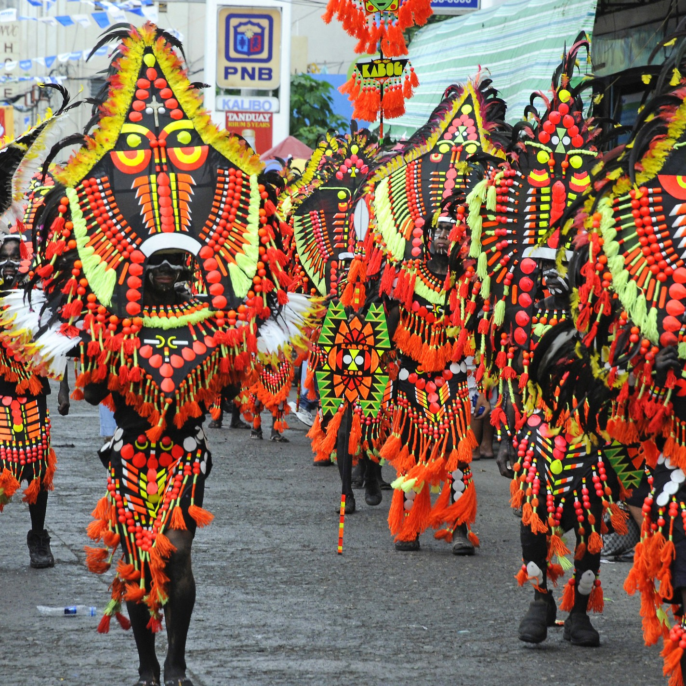
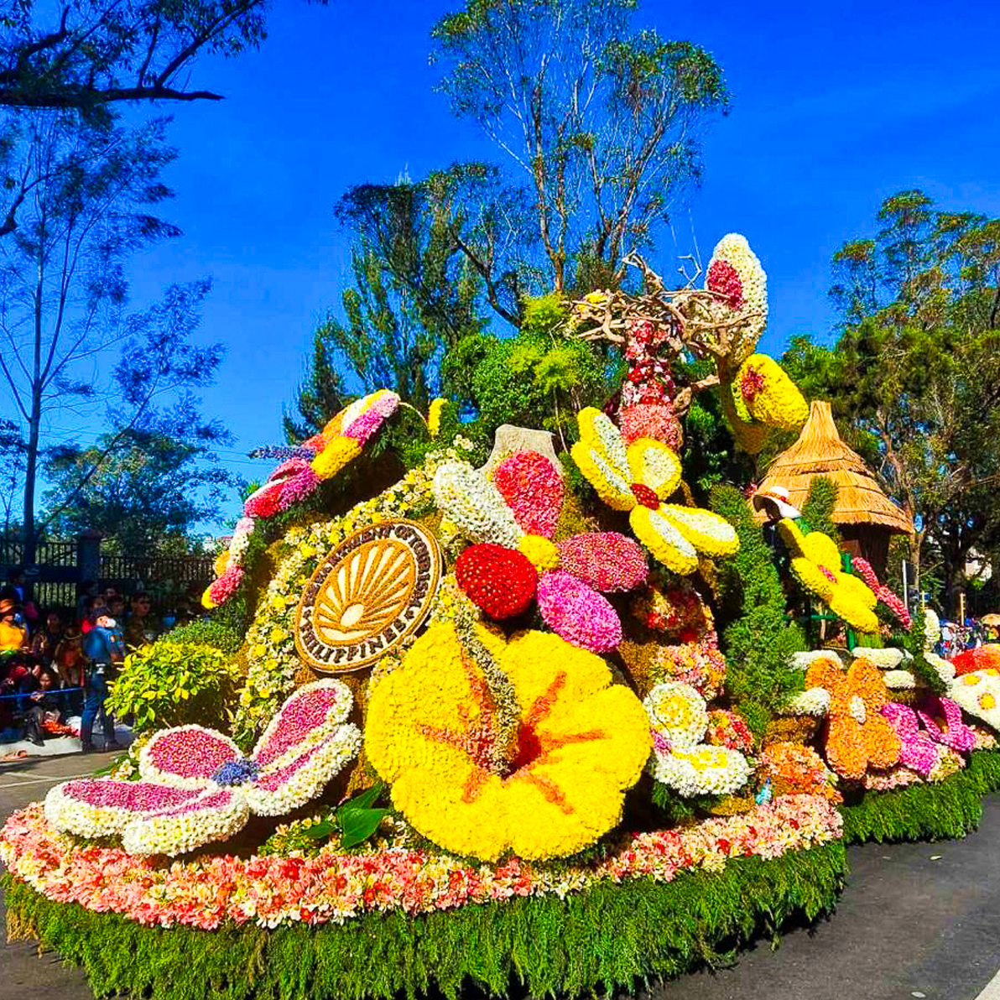
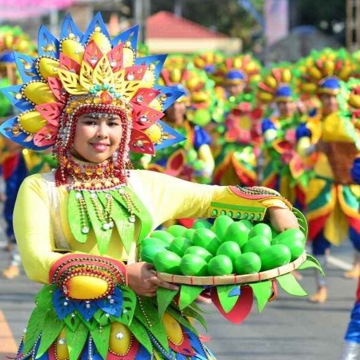

Analyzing how different towns use art to tell their story. For example, the floral explosions of the Panagbenga Festival in Baguio versus the monochromatic, fierce look of the Ati-Atihan in Aklan.
This sub-topic focuses on the "what" and "how" of festival aesthetics.

A festival is organized like a stage production with planned music, dance, and movement. It combines different visual and performing arts to tell a story about culture and identity. An example is the Sinulog Festival, where dancers perform coordinated routines in the streets.

Uses regional textiles and creative materials to make outfits that represent culture and allow dancers to move freely. Colors, patterns, and accessories help make the performance more lively and visually appealing. An example is the vibrant costumes worn during the Ati-Atihan Festival.

Include hand-held objects, floats, and decorations that represent the community’s products or traditions. These elements help make the festival more creative and meaningful to viewers. An example is the flower floats used in the Panagbenga Festival.

Explain how festivals began and changed over time. Many started as religious offerings or harvest celebrations before becoming modern tourist events. An example is the Pahiyas Festival, which began as a thanksgiving for a good harvest.
| Festival | Primary Visual Element | Dominant Colors | Artistic Theme |
|---|---|---|---|
| Panagbenga | Giant Flower Floats | Pastel Pinks & Yellows | Nature and Rebirth |
| Ati-Atihan | Soot-covered skin & Tribal Gear | Black, Gold, Earth Tones | Indigenous Heritage |
| MassKara | Smiling Masks with beads | Neon & Electric Blue | Resilience and Joy |
| Pahiyas | Kiping (Rice Wafers) | Multi-colored Rainbow | Harvest & Thanksgiving |